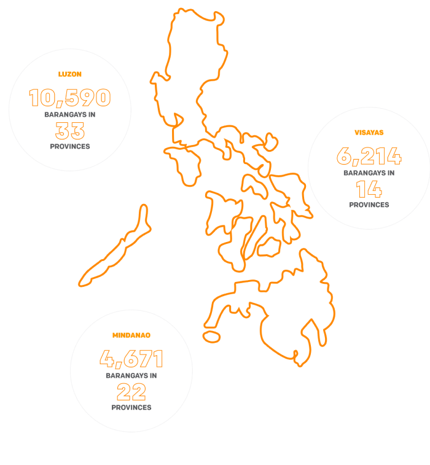

END POVERTY
The Journey to a Future Full of Hope
THE PROBLEM OF POVERTY IS MASSIVE AND MULTI-FACETED.
It is brought about by a crisis in values as much as in economics. Therefore, the foundation of our work starts with building a culture of caring and sharing where everyone takes ownership in solving the problem of poverty and finds commonality in shared values such as duty to neighbor and selfless service.
OUR PROGRAMS
Gawad Kalinga continuously maps barangays/communities where the poorest of the poor are. Through our vast network of partners and volunteers on-ground, we are able to deliver assistance where and when it is needed the most.
